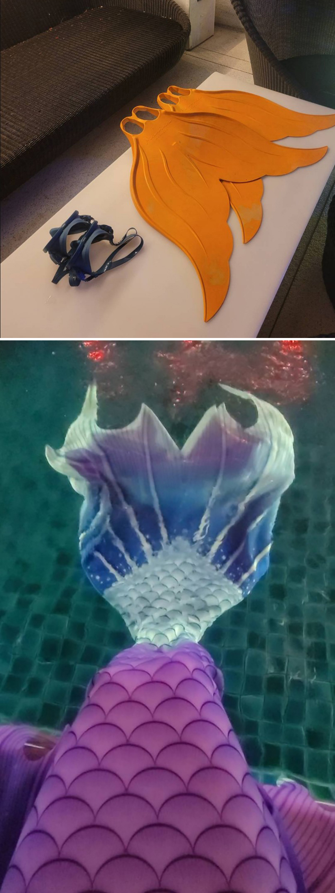
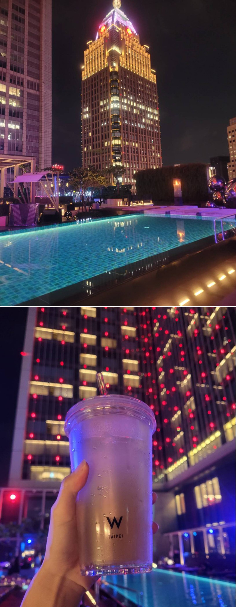

這幾年「人魚潛水」開始風靡，早在參加潛水和瑜伽活動後，我就一直很想親身體驗一番。穿上人魚的尾巴，在水中像波浪般的扭動身體，優雅地向前游動，那種自由自在的感覺實在讓人著迷。
有一次，偶然看到萬豪W Hotel舉辦的「人魚體驗活動」廣告，這樣的機會實在難得，當我找到空閒時間，便立刻趕到飯店現場報名。相較於市場上的人魚體驗價格，這次活動的費用相當優惠，可惜的是，身邊的朋友大多不會游泳，所以最後決定自己一個人參加，但即便如此，我依然對這次體驗充滿期待。
體驗當天，我來到W Hotel的12樓報到。櫃台給了我更衣室的鑰匙，儘管不是第一次來，但由於多年沒來了，還是請櫃台人員幫忙指示更衣室的位置，換好泳衣後，我在健身房櫃台前集合，雖然有些害羞，但最近減肥讓我稍微有了些自信，櫃台也提到，之前的學員都是直接穿比基尼集合，讓我放鬆不少。
|  |
到了體驗時間，我發現現場只有我一個人，原來今天只有兩位學員參加，另一位學員遲到，教練便先帶我到十樓的泳池，等另一位學員到齊後，才開始解說。隨後，教練開始介紹設備，首先是魚尾巴的蛙鞋，教我們如何分辨正反面並試穿大小，當我穿上這套人魚裝後，才發現根本無法在陸地上走動，想拿任何東西都得請教練幫忙，否則就只能先脫下人魚裝了。
真的緣分一切來的很美好，因為只有兩位學員，每人配了一位教練，這樣不僅學習品質高，還能確保每個人都能受到充分照顧。我之前還擔心一個人來參加，會沒有人幫忙拍照，但教練非常貼心，幫我們記錄下過程，一起上課的學員也很親切，整個過程中大家相處得很愉快。
畢竟是體驗活動，所以教學內容並不多，穿著沉重的魚尾裝在水中移動並不容易，兩條腿被固定成一條後，第一步就是要學會在水中站穩，接著教練示範如何像人魚般游動，從手臂、肩膀到腹部，再帶動雙腿進行流暢的擺動、翻身、站立、游動，看似簡單，但實際操作起來並不容易。每當教練指出我們的動作問題，經過反覆練習後，我終於找到了一些感覺。看著教練錄製的影片，發現自己的進步，真的很有成就感，從最初的笨拙，到後來慢慢掌握節奏，我越來越像個真正的人魚。最後，教練還教我們如何在水中吐泡泡畫愛心，儘管失敗 了很多次，但最終還是成功了幾次，和學員對練的過程也充滿樂趣。
|  |
課程結束，教練讓我們自由玩耍一會兒。離開泳池後，我和朋友在池邊享用了活動提供的特調飲品，邊聊天邊回味這段難忘的體驗。
這次活動給了我一個重要的體悟：當你想做一件事時，不知不覺中你會發現機會就在眼前，只要抓住它，夢想就能實現。過程中，我也曾擔心活動會不會爆滿、一個人參加會不會孤單、拍照的機會是否會錯過……但結果卻出乎意料地順利。這場活動剛好報名人數不多；同學也是一個人來體驗；泳池在我們課程期間也沒其他房客使用，這一切巧合都讓我覺得自己非常幸運，能夠實現想做的事。